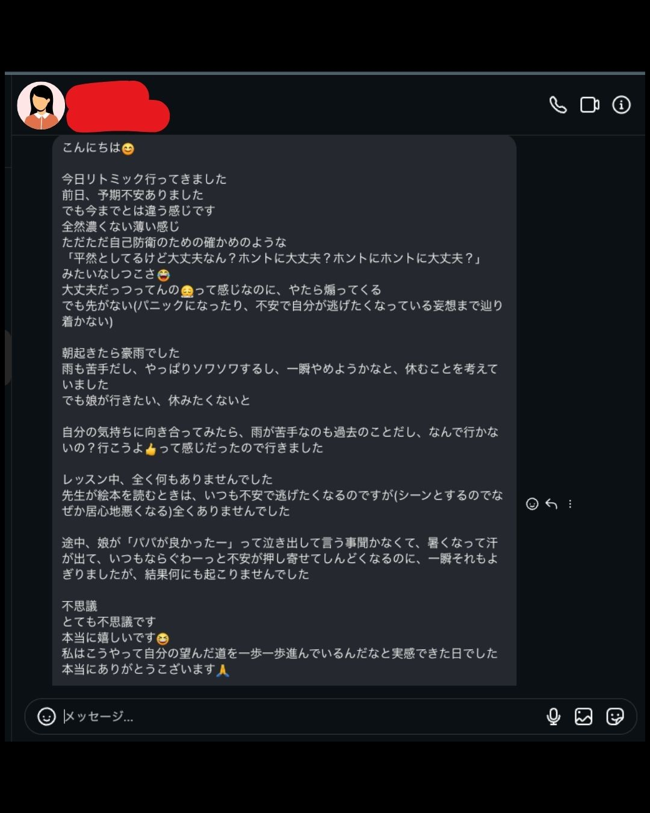

VOICE
「変わらない」と思っていた方たちが、
実際に変わった証拠



WARNING
何もしなければ、
今と同じ恐怖の中で生きていく。
本気の方のみ、ご参加ください
VOICE
「変わらない」と思っていた方たちが、
実際に変わった証拠

THE TRUTH
今この瞬間も、
パニック障害は
あなたの脳の中に
根を張り続けている。
待っていても、消えない。
時間が経てば経つほど、
恐怖の記憶は深く刻まれていく。
YOUR REALITY
電車、バス、車、飛行機。
トンネル、人混み、
歯医者、美容院——
行けない場所が、
また一つ増えた。
動悸。息苦しさ。血の気が引く感覚。
冷や汗、気持ち悪さ、めまい。
逃げられない状況になると——
もうそれだけで、体が反応してしまう。
自分がやりたいことを、
好きなようにできない。
それが、今日のあなただ。
YOUR TRUTH
でも、あなたは
本当は知っている。
パニックのない、昔の自分に戻りたい。
薬に頼らずに生きていきたい。
好きなところに、自由に行きたい。
自分の気持ちに正直に、
ただ毎日を生きていきたい——
それだけなのに、できない。
その気持ちは、本物だ。
WHY YOU CAN'T MOVE
一人では、見えないから。
潜在意識の奥にあるプログラムは、
自分では気づくことができません。
なぜなら、あなたがそれを
「100%そうだ、当たり前だ」と
信じているからです。
自分の思い込みは、
思い込みだとわからない。
それが、潜在意識の仕組みです。
YOUR FUTURE
変わった後の自分を、
想像してみてください。
電車も、飛行機も、歯医者も——
行きたい場所に、ただ行ける。
やりたいことを、好きなようにできる。
感情にも、人にも振り回されない。
自分の気持ちに正直に、
ただ今日を生きられる毎日がある。
人生が、過去最高に充実している。
最高に自由で、幸せな自分がいる。
それが、潜在意識を書き換えた先にある毎日です。
FOR YOU
あなたには、これが必要で、
あなたには、これが欲しいはずです。
パニック障害のない自分が
欲しいという気持ちと、
今の苦しさを終わらせる
必要があるという確信。
その両方が、今あなたの中にある。
FOR THOSE WHO TRIED BEFORE
「潜在意識の書き換えや
脳科学を試したけど、
変わらなかった。」
その気持ち、よくわかります。
でも、それには理由があります。
自分のプログラムは、
自分では見えません。
自分が「100%そうだ」と信じているから。
だから、パニックになったことがない、
パニック発作の潜在意識プログラムの鍵を知らない、
自分自身がそのブロックのあるコーチでは
見つけることができないため
本当の根っこに触れられないことが多い。
実際に成果を出してきたコーチが
あなたの潜在意識に直接アクセスし、
書き換えをガイドするから変わる。
あなたは目を閉じて、
ガイドの声に従ってイメージするだけ。
頑張る必要はない。委ねるだけでいい。
YOUR GUIDE
パニック障害を自分で経験し、
自分で根本から手放した。
その人間が、ここにいる。
だから小松大将は、
あなたのパニック障害を
100% 手放すガイドができる。
自分がそれを生きて証明してきたから。
パニック障害の根本解決と、
小松大将は同義です。
STORY
パニック障害の恐怖を——
僕は10年間、知っていた。
発作が怖くて外に出られなかった。
電車に乗れなかった。
「また来たらどうしよう」という恐怖が、
毎日頭から離れなかった。
症状を消そうとしても、変わらなかった。
地上の茎を刈り取っても、
根っこが残る限り
雑草は何度でも生えてくる。
だから僕は、根っこから書き換えた。
原因側に立った。
そうしたら、現実が変わり始めた。
パニック障害は、あなたの弱さではない。
脳のプログラムが誤作動しているだけ。
原因側に立てば、根っこから手放せる。
Na'au Noa 代表 小松 大将
WHY FREE
なぜ、無料なのか。
「私の人生はこんなはずじゃない」
今すぐ本気でパニック障害を手放し、
自分軸で幸せな自分の在り方で人生を逆転させたい
そんな風に可能性を信じているあなたと直接話がしたいからです。
本気で「変わりたい」という気持ちがある方だけ、
来てください。
完全無料 / Zoom / 全国対応